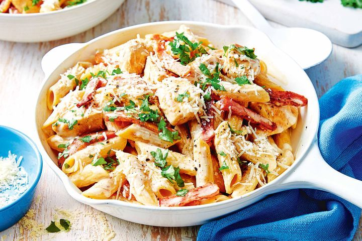

Beautiful Chicken Carbonara
Pictured below, my god it looks good
<
Carbonara (Italian: [karboˈnaːra]) is an Italian pasta dish from Rome made with eggs, hard cheese, cured pork, and black pepper. The dish arrived at its modern form, with its current name, in the middle of the 20th century. The cheese is usually Pecorino Romano, Parmigiano-Reggiano, or a combination of the two.
Ingredients, and where to find them?
- 1 Pack of spaghetti
- 2 Teaspoons of olive oil
- 1 (4ounce) pack of pancetta bacon, diced
- 2 cloves of garlic, thoroughly minced
- 2.5 cups of whipping cream
- 1 cup of freshly grated parmesan cheese
- 8 large egg yolks
- 1/4 cup of chopped fresh italian parsley
- 4 cups shredded cooked chicken
- Salt and freshly ground black pepper
Now then, where do we begin?
Step 1. Bring a large pot of lightly salted water to a boil. Cook spaghetti in the boiling water, stirring occasionally, until tender yet firm to the bite, about 12 minutes. Drain.
Step 2. Meanwhile, heat olive oil in a large, heavy frying pan over medium heat. Add pancetta and garlic; saute until brown and crisp, about 8 minutes. Remove from the heat and cool slightly.
Step 3. Whisk cream, Parmesan, egg yolks, basil, and parsley together in a large bowl until well blended.
Step 4. Stir chicken into the pancetta mixture until combined. Add cooked spaghetti and cream mixture. Toss over medium-low heat until chicken is heated through and sauce forms a thick coating over the spaghetti, about 4 minutes. Do not boil or the eggs will scramble. Season with salt and pepper and transfer to a large, wide serving bowl.